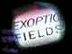
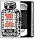

|
>videos (Canadian tv reviews our project, October 2001!) The blind eye project videos are designed to deflect the gaze away from the screen. We've produced two videos this way: preview exoptic fields "The most advanced consumer product ever designed to deliberately un-consume." More below. more blind heat salon.com
writup exoptic
fields by age series
In development: videos designed to deflect rather than attract toddlers
and children, 7-12 year olds, another for 12-18 year olds.
(Of course, for children and toddlers, no television is still
better than even deflective tv.)
|
|
|
about | times sq-EXTRA! | the science | storefronts | videos |